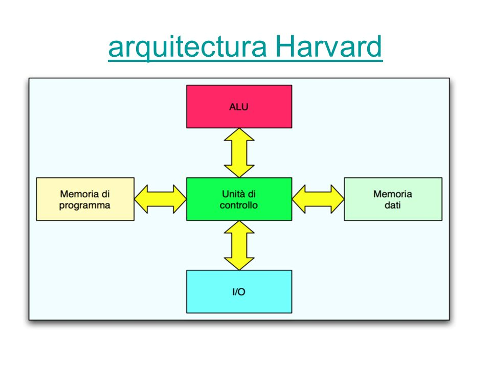
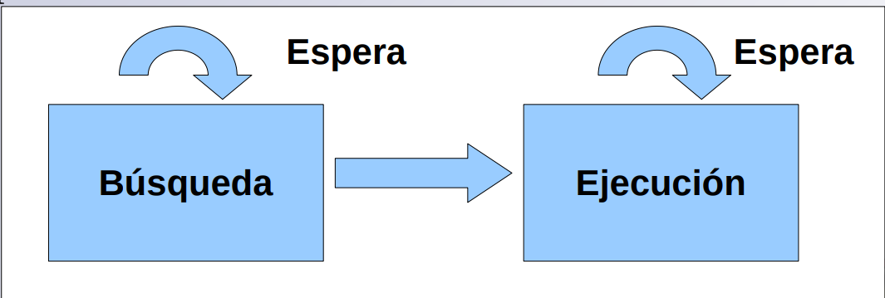
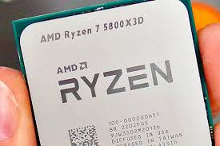
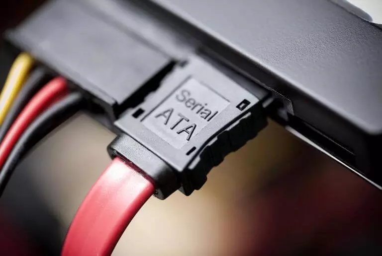

1.1 Modelos de Arquitecturas de Computo
Modelo Vonn Neumann
La unidad central de proceso (CPU), está conectada a una memoria principal única
(casi siempre sólo RAM) donde se guardan las instrucciones del programa y los datos. A dicha memoria se accede a
través de un sistema interconexión de buses único (control, direcciones y datos). En un sistema con arquitectura
Von Neumann el tamaño de la unidad de datos o instrucciones está fijado por el ancho del bus que comunica la
memoria con la CPU. El tener un único bus hace que el microprocesador sea más lento en su respuesta, ya que no
puede buscar en memoria una nueva instrucción mientras no finalicen las transferencias de datos de la
instrucción anterior. Componentes principales de Von Neumann
está conectada a una memoria principal única
(casi siempre sólo RAM) donde se guardan las instrucciones del programa y los datos. A dicha memoria se accede a
través de un sistema interconexión de buses único (control, direcciones y datos). En un sistema con arquitectura
Von Neumann el tamaño de la unidad de datos o instrucciones está fijado por el ancho del bus que comunica la
memoria con la CPU. El tener un único bus hace que el microprocesador sea más lento en su respuesta, ya que no
puede buscar en memoria una nueva instrucción mientras no finalicen las transferencias de datos de la
instrucción anterior. Componentes principales de Von Neumann
Modelo Harvard
Esta arquitectura utiliza los Micro controladores, tiene la unidad central de proceso (CPU) conectada a dos
memorias (una con las instrucciones y otra con los datos) por medio de dos buses diferentes. Una de las memorias
contiene solamente las instrucciones del programa (Memoria de Programa), y la otra sólo almacena datos (Memoria
de Datos).  Ambos buses son totalmente independientes lo que permite que la
CPU pueda acceder de forma independiente y simultánea a la memoria de datos y a la de instrucciones. El tamaño
de las instrucciones no está relacionado con el de los datos, y por lo tanto puede ser optimizado para que
cualquier instrucción ocupe una sola posición de memoria de programa, logrando así mayor velocidad y menor
longitud de programa. La principal desventaja de esta arquitectura; el bus de datos y direcciones único se
convierte en un cuello de botella por el cual debe pasar toda la información que se lee de o se escribe Modelo
Harvarda la memoria, obligando a que todos los accesos a esta sean secuenciales. Limita el grado de paralelismo
(acciones que se pueden realizar al mismo tiempo) y por lo tanto, el desempeño de la computadora.
1.1.2 Segmentadas
Es una de las tecnologías utilizadas para realizar la segmentación o paralelismo. Divide el procesador, en
etapas, procesa una instrucción diferente en cada una y trabaja con varias a la vez. Pueden trabajar de forma
paralela, en diferentes instrucciones, utilizando una cola de instrucciones
para su comunicación, denominado entubamiento. La técnica de implementación clave utilizada para hacer CPU. La
dependencia de datos y de control, que tiene como efecto la disminución del rendimiento del pipelining. La
segmentación de cauce (pipelining) es una forma efectiva de organizar el hardware del CPU para realizar más de
una operación al mismo tiempo. Consiste en descomponer el proceso de ejecución de las instrucciones en fases o
etapas que permitan una ejecución simultánea. Las etapas están conectadas, cada una a la siguiente, para formar
una especie de cauce las instrucciones se entran por un extremo, son procesadas a través de las etapas y salen
por el otro. La productividad de la segmentación está determinada por la frecuencia con que una instrucción
salga del cauce.
1.1.2 Multiprocesamiento
Se denomina multiprocesador a un computador que cuenta con dos o más microprocesadores (CPUs).  La arquitectura NUMA, donde cada procesador tiene acceso y control exclusivo a una
parte de la memoria. La arquitectura SMP, donde todos los procesadores comparten toda la memoria. Para que un
multiprocesador opere correctamente necesita un sistema operativo especialmente diseñado para ello. La
arquitectura NUMA, donde cada procesador tiene acceso y control exclusivo a una parte de la memoria. La
arquitectura SMP, donde todos los procesadores comparten toda la memoria. Los CPU de multiprocesamiento según
Flynn se clasifican de la siguiente manera:
La arquitectura NUMA, donde cada procesador tiene acceso y control exclusivo a una
parte de la memoria. La arquitectura SMP, donde todos los procesadores comparten toda la memoria. Para que un
multiprocesador opere correctamente necesita un sistema operativo especialmente diseñado para ello. La
arquitectura NUMA, donde cada procesador tiene acceso y control exclusivo a una parte de la memoria. La
arquitectura SMP, donde todos los procesadores comparten toda la memoria. Los CPU de multiprocesamiento según
Flynn se clasifican de la siguiente manera:
Unidad Central de procesamiento (CPU)
Se la suele llamar coloquialmente como microprocesador o simplemente procesador, y puedes considerarla como el cerebro de cualquier dispositivo. Se encarga de procesar todas las instrucciones del dispositivo, leyendo las órdenes y requisitos del sistema operativo, así como las instrucciones de cada uno de los componentes y las aplicaciones. La CPU es la que se encarga de que todo funcione correctamente, y de interpretar todo lo que quiere hacer el sistema operativo o los componentes, estableciendo las conexiones y realizando todos los cálculos precisos para que funcione. Cuanto más potente sea el procesador, más rápido podrá hacer las operaciones y más rápido funcionará tu dispositivo en general.
Unidad Aritmetica Logica
Es un circuito logico digital que realiza operaciones aritmeticas y logicas entres los datos de un circuito: suma resta, division y multiplicacion, asi como establece comparaciones logicas a traves de los condicionales logicos "si", "no", y "o". Todos los microprocesadores incluyen al menos una ALU, que varia su poder y complejidadsegún su finalidad Además, la ALU cuenta con una serie de registros para almacenar los datos y bits de informacion sobre los resultados.

Registros
Los registros que encuentran dentro de cada procesador su función principales almacenar los valores de cada uno de los datos,comandos,instrucciones o estados binarios que son los que ordenan qué dato debe procesarse, así como la forma en la que se debe realizar. Un registro no deja de ser una memoria de velocidad alta y con poca capacidad. Cada registro puede contener una instrucción, una dirección de almacenamiento o cualquier tipo de dato. Cada procesador tiene varias asignaciones o tareas que debe de realizar para el manejo de la información. 
Buses
Un bus se puede definir como una línea de interconexión portadora de información, constituida por varios hilos conductores (en sentido físico) o varios canales (en sentido de la lógica), por cada una de las cuales se transporta un bit de información. Existen dos tipos primordiales de buses (conexiones) para el envío de la información: bus paralelo o serial: Bus paralelo: Es un bus en el cual los datos son enviados por bytes al mismo tiempo, con la ayuda de varias líneas que tienen funciones fijas.

Conceptos basicos del manejo de la memoria
La gestión de memoria o administración de memoria es el acto de gestionar la memoria de un dispositivo informático.  El proceso de asignación de memoria a los programas que la solicitan. La gestión de la memoria principal de una computadora es una tarea de suma importancia para el funcionamiento de la misma. Los sistemas de memoria virtual separan las direcciones de memoria utilizadas por un proceso de las direcciones físicas reales, permitiendo la separación de procesos e incrementando la cantidad efectiva de memoria de Memoria ram imgacceso aleatorio utilizando la paginación. La calidad de la gestión de la memoria es crucial para las prestaciones del sistema. La administración de memoria se refiere a los distintos métodos y operaciones que se encargan de obtener la máxima utilidad de la memoria, organizando los procesos y programas que se ejecutan de manera tal que se aproveche de la mejor manera posible el espacio disponible. Las técnicas que existen para la carga de programas en la memoria son: partición fija, que es la división de la memoria libre en varias partes (de igual o distinto tamaño) y la partición dinámica, que son las particiones de la memoria en tamaños que pueden ser variables, según la cantidad de memoria que necesita cada proceso.
El proceso de asignación de memoria a los programas que la solicitan. La gestión de la memoria principal de una computadora es una tarea de suma importancia para el funcionamiento de la misma. Los sistemas de memoria virtual separan las direcciones de memoria utilizadas por un proceso de las direcciones físicas reales, permitiendo la separación de procesos e incrementando la cantidad efectiva de memoria de Memoria ram imgacceso aleatorio utilizando la paginación. La calidad de la gestión de la memoria es crucial para las prestaciones del sistema. La administración de memoria se refiere a los distintos métodos y operaciones que se encargan de obtener la máxima utilidad de la memoria, organizando los procesos y programas que se ejecutan de manera tal que se aproveche de la mejor manera posible el espacio disponible. Las técnicas que existen para la carga de programas en la memoria son: partición fija, que es la división de la memoria libre en varias partes (de igual o distinto tamaño) y la partición dinámica, que son las particiones de la memoria en tamaños que pueden ser variables, según la cantidad de memoria que necesita cada proceso.